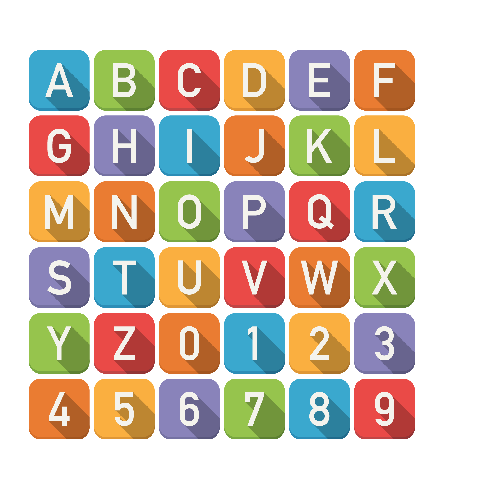
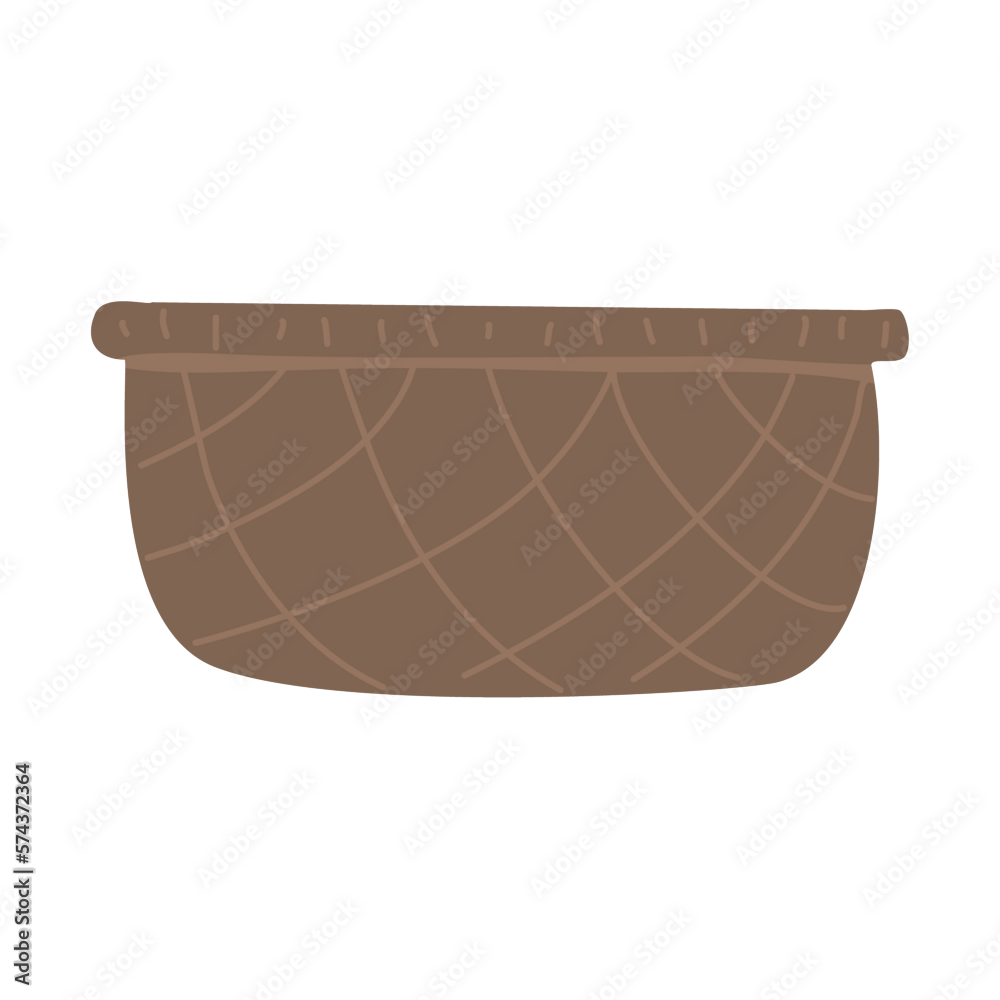
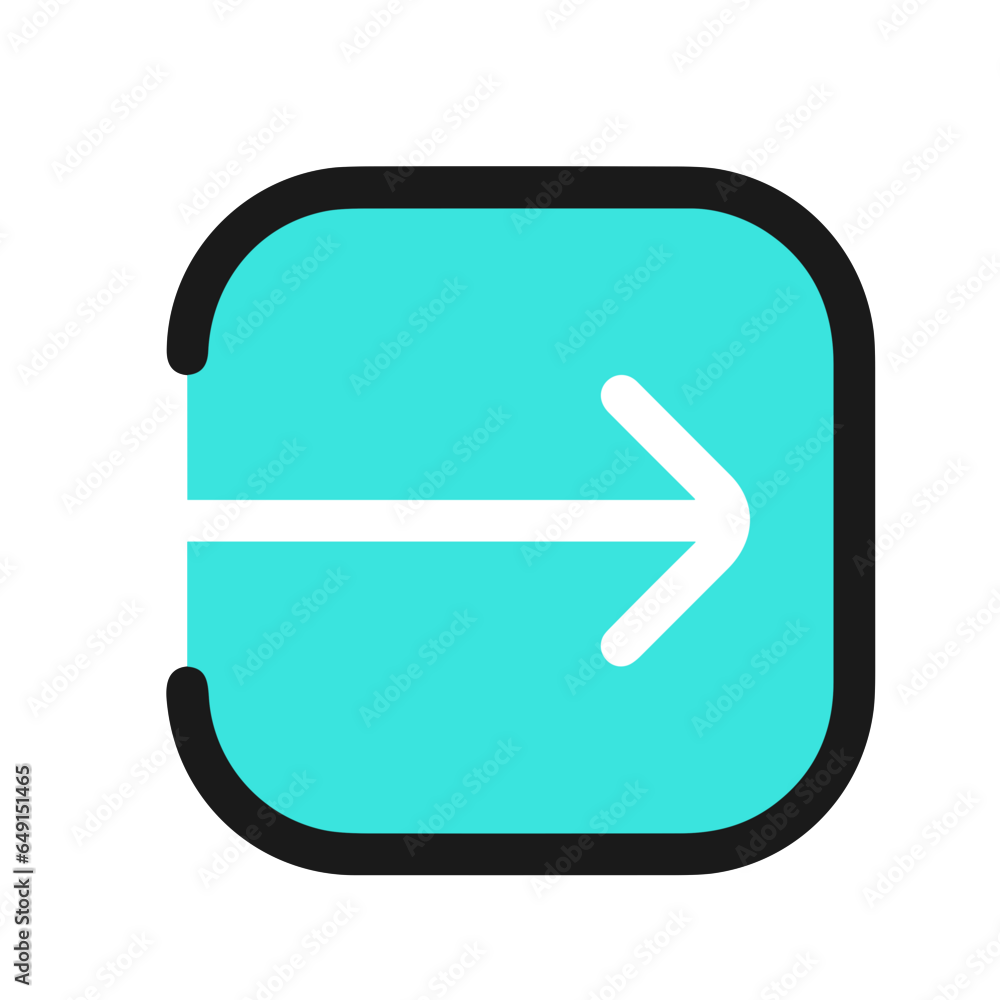
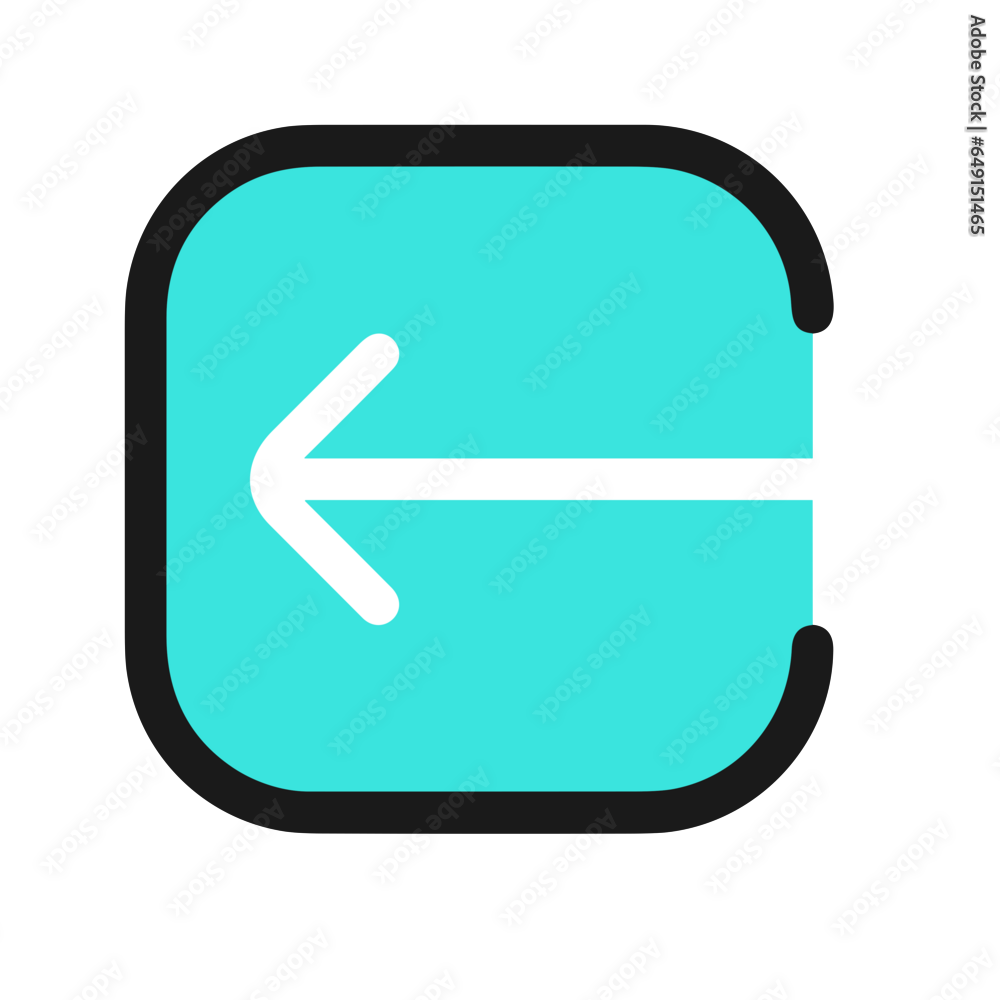
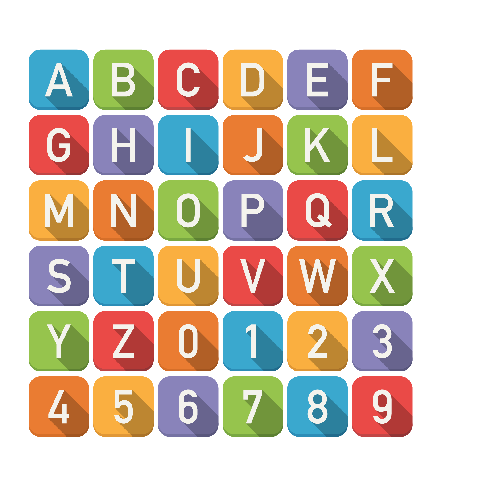
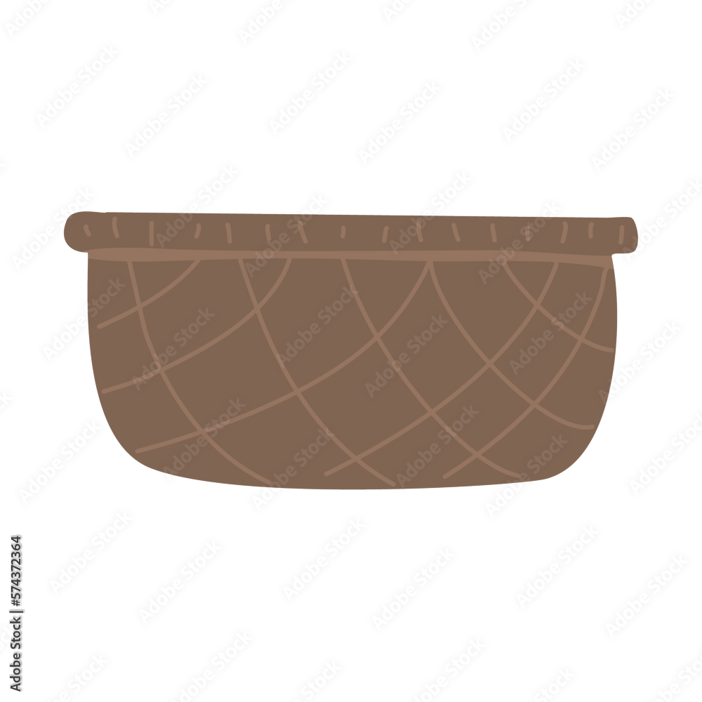
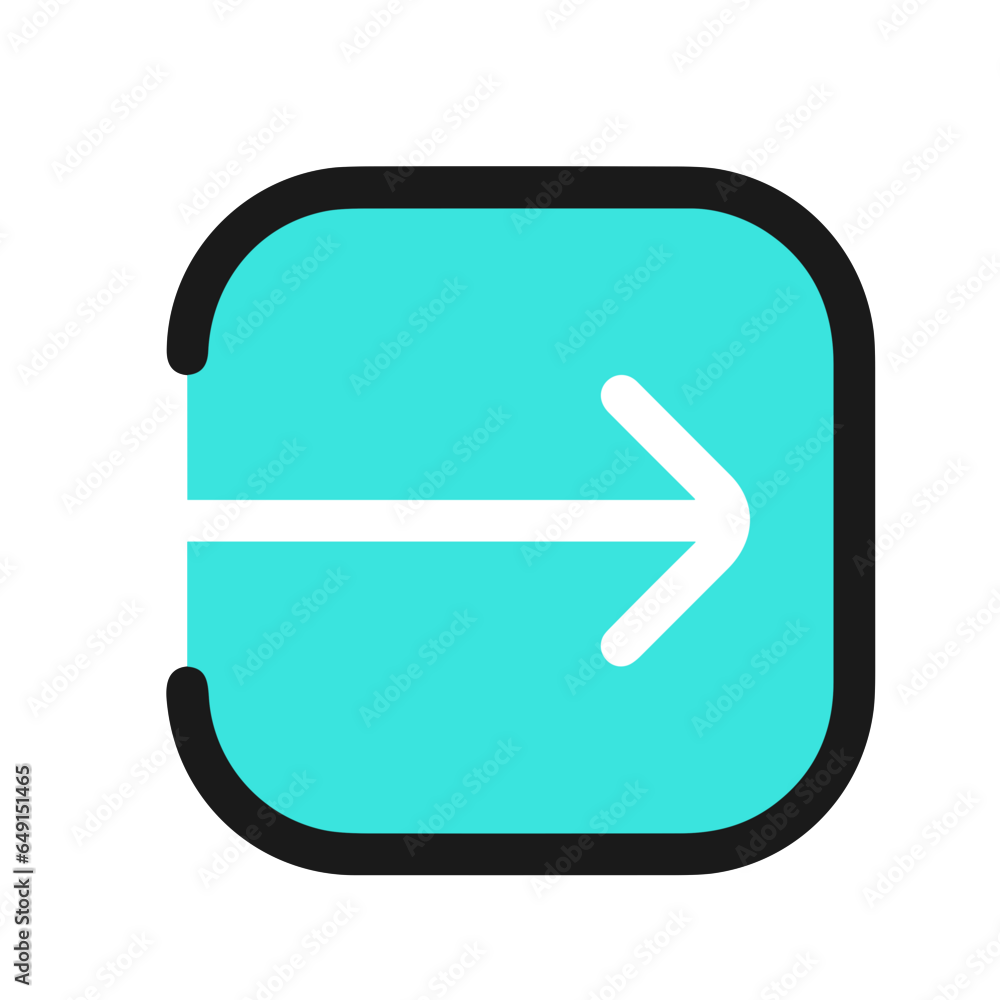
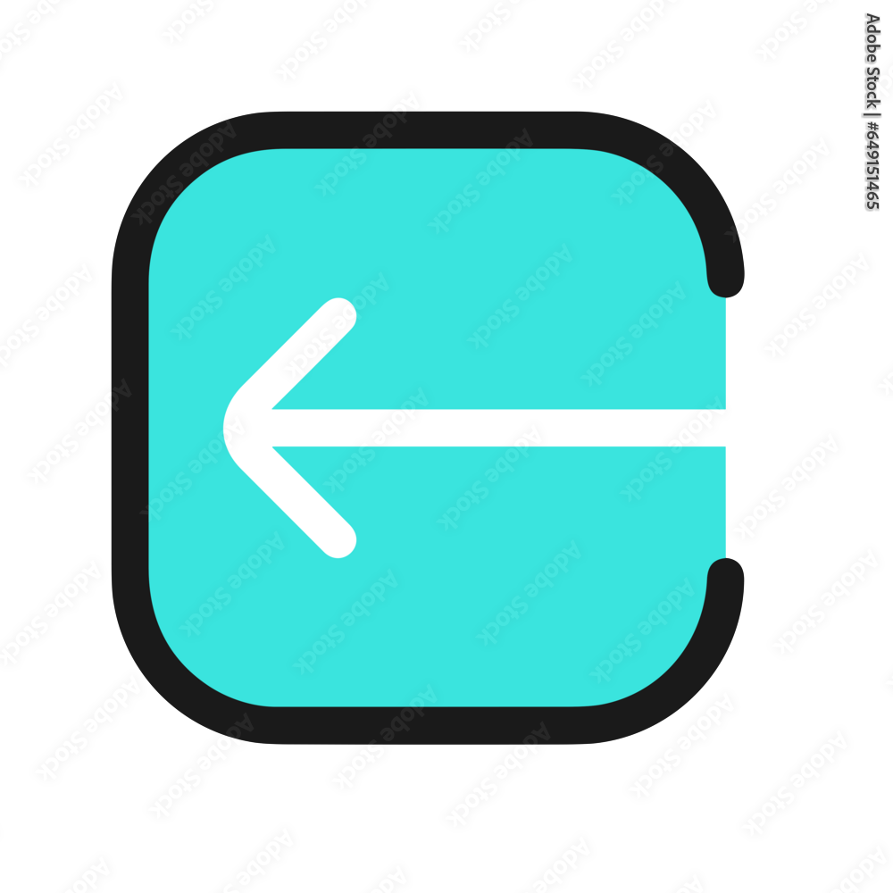

How to play
If your baby is playing the game on mobile, click on the right and left arrows in the game window for the basket to move. On a laptop, you can use the side arrows to move. The objective is to move the basket to capture the alphabet falling from the air by reaching below it. When you capture the alphabet successfully, you hear its pronunciation along with the name of the object that starts with the alphabet. This free toddlers' game falls under the category of simple click games, space back games, or simple touch games. Also, note that this is a perfect game to play on loop to keep toddlers engaged.